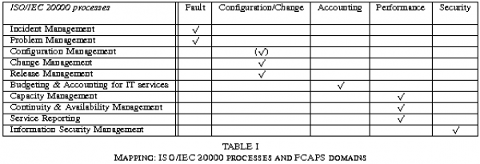

ITIL
What it ITIL?
The IT Infrastructure Library (ITIL) is a set of human management practices surrounding IT infrastructure that are designed to bring quality assurance and continuous improvement to organizations. ITIL has emerged as a de-facto set of ideas about service management. Many of ITIL's ideas are rooted in and legacy views of the service desk and human remediation. This document explains how to accomplish the major goals of ITIL, in the automated framework of CFEngine.
More concretely, the IT Infrastructure Library (ITIL) is a collection of books, in which “best practices” for IT Service Management (ITSM) are described. Today, ITIL can be seen as a de-facto standard in the discipline of ITSM, for which it provides guidelines by its current core titles Service Strategy, Service Design, Service Transition, Service Operation and Continual Service Improvement. ITIL follows the principle of process-oriented management of IT services.
In effect, the responsibilities for specific IT management decisions can be shared between different organizational units as the management processes span the entire IT organization independent from its organizational partition. Whether this means a centralization or decentralization of IT management in the end, depends on the concrete instances of ITIL processes in the respective scenario.
ITIL history and versions
ITIL has its roots in the early 1990s, and since then was subject to numerous improvements and enhancements. Today, the most popular release of ITIL is given by the books of ITIL version 2 (often referred to as ITILv2), while the British OGC (Office of Government Commerce), owner and publisher of ITIL, is currently promoting ITIL version 3 (ITILv3) under the device "`ITIL Reloaded"'. A further ITIL version has already been planned, owing to perceived problems with version 3.
ITILv3 is not just an improved version of the ITILv2 books, but rather comes with a completely renewed structure, new sets of processes and a different scope with respect to the issue of IT strategies, IT-business-alignment and continual improvement. In the following, we run through the basics of both versions, highlighting commonalities and differences.
Basics
ITIL is an attempt to implement theDeming Quality Circleas a model for continual quality improvement. Quality relates to the provided IT services as well as the management processes deployed to manage these services. Continual improvement in ITIL means to follow the method of Plan-Do-Check-Act:
Plan
Plan the provision of high-quality IT services, i.e. set up the required management processes for the delivery and support of these services, define measurable goals and the course of action in order to fulfill them.
Do
Put the plans into action.
Check
Measure all relevant performance indicators, and quantify the achieved quality compared to the quality objectives. Check for potentials of improvement.
Act
In response to the measured quality, start activities for future improvements. This step leads into the Plan phase again.
Version 2
Although ITIL version 3 was released during the summer of 2007, it is its predecessor that has achieved great acceptance amongst IT service providers all over the world. Also due to the fact that the International ISO/IEC 20000 standard emerged from those basic principles and processes coming from ITILv2, it is this version experiencing the biggest distribution and popularity.
The core modules of ITIL version 2 are the books entitled Service Support and Service Delivery. While the Service Support processes (e.g. Incident Management, Change Management) aim at supporting day-to-day IT service operation, the Service Delivery processes (e.g. Service Level Management, Capacity Management, Financial Management) are supposed to cover IT service planning like resource and quality planning, as well as strategies for customer relationships or dealing with unpredictable situations.
Version 3
In 2007, version 2 was replaced by its successor version 3, aimed at covering the entire service life cycle from a management perspective and striving for a more substantiated idea of IT business alignment. Many version 2 processes and ideas have been recycled and extended by various additional processes and principles. The five service life cycle stages accordant to versin 3 are:
Service Strategy: Common strategies and principles for customer-oriented, business-driven service delivery and management
Service Design: Principles and processes for the stage of designing new or changed IT services
Service Transition: Principles and processes to ensure quality-oriented implementation of new or changed services into the operational environment
Service Operation: Principles and processes for supporting service operation
Continual Service Improvement: Methods for planning and achieving service improvements at regular intervals
Service orientation and ITIL
Why service and process orientation? What is ITIL trying to do? As we mentioned in the introduction, the `top down hierarchical' control view of human organization fell from favour in business research in the 1980s and service oriented autonomy was identified as a new paradigm for levelling organizations – getting rid of deep hierarchies that hinder communication and open up communication directly.
If we look at ITIL through the eyeglass of a hierarchical organization, some of its procedures could be seen as restrictive, throttling scalable freedoms. We do not believe that this is their intention. Rather ITIL's guidelines try to make a predictable and reliable face for business and IT operations so that customers feel confidence, without choking the creative process that lies behind the design of new services.
CFEngine in ITIL clothes?
CFEngine users are interested in the ability to manage, i.e. cope with system configuration in a way that enables a business or other organization to do its work effectively. They don't want human procedures because this is what CFEngine is supposed to eliminate. To be able to use ITIL to help in this task, we have to first think of the process of setting up as a number of services. What services are these? We have to think a little sideways to see the relationship.
Service Management
Providing a sensible configuration policy, responding to discovered problems or the needs of end-users.
Change Management
A minor edit of the configuration policy, with appropriate quality controls. Or a change that comes from a completely different source, outside the scope of intended change.
Release Management
A new configuration policy, consisting of many changes. This could be a major and disruptive change so it should be planned carefully.
Capacity Management
Having enough resources for cfservd to answer all queries in a network. Having enough people and machines to support the processes of deploying and following CFEngine's progress.
ITIL processes
The following management processes are in scope of ITILv3:
Service Level Management: Management of Service Level Agreements (Alas), i.e. service level and quality promises.
Service Catalogue Management: deciding on the services that will be provided and how they are advertised to users.
Capacity Management: Planning and provision of adequate business, service and resource capacities.
Availability Management: Resource provision and monitoring of service, from a customer viewpoint.
Continuity Management: Development of strategies for dealing with potential disasters.
Information Security Management: Ensuring a minimum level of information security throughout the IT organization.
Supplier Management: Maintaining supplier relationships.
Transition Planning and Support: Ensuring that new or changed services are deployed into the operational environment with the minimal impact on existing services
Asset and Configuration Management: Management of IT assets and Configuration Items.
Release Management: Planning, building, testing and rolling out hardware and software configurations.
Change Management: Assessment of current state, authorization and scheduling of improvements.
Service Validation and Testing: ensuring that services meet their specifications.
Knowledge Management: organizing and integrating experience and methodology for future reference.
Incident Management: responding to deviations from acceptable service.
Event Management: Efficient handling of service requests and complaints.
Problem Management: Problem identification by trend analysis of incidents.
Request Fulfillment: Fulfilling customer service requests.
Access Management: Management of access rights to information, services and resources.
Service Strategy
Service Design
Service Operation
Continual Service Improvement
Service Strategy
Service strategy is about deciding what services you want to formalize. In other words, what parts of your system administration tasks can you wrap in procedural formalities to ensure that they are carried out most excellently?
Service Design
Service design is about deciding what will be delivered, when it will be delivered, how quickly the service will respond to the needs of its clients etc. This stage is probably something of a mental barrier to those who are not used to service-oriented thinking.
Service Operation
How shall we support service operation? What resources do we need to provide, both human and computer? Can we be certain of having these resources at all times, or is there resource sharing taking place? If services are chained into “supply chains”, remember that each link of the chain is a possible delay, and a possible misunderstanding. Successfully running services can be more complex at task than we expect, and this is why it is useful to formalize them in an ITIL fashion.
Continual Service Improvement
Continual improvement is quite self-explanatory. We are obviously interested in learning from our mistakes and improving the quality and efficiency by which we respond to service requests. But it is necessary to think carefully about when and where to introduce this aspect of management. How often should we revise out plans and change procedures? If this is too often, the overhead of managing the quality becomes one of the main barriers to quality itself! Continual has to mean regular on a time-scale that is representative for the service being provided, e.g. reviews once per week, once per month? No one can tell you about your needs. You have to decide this from local needs.
Tool Support
In the field of tool support for IT Service Management accordant to ITIL, various white papers and studies have been published. In addition, there are papers available from BMC, HP, IBM and other vendors that describe specific (commercial) solutions. Generally, the market for tools is growing rapidly, since ITIL increasingly gains attention especially in large and medium-size enterprises. Today, it is already hard to keep track of the variety of functionalities different tools provide. This makes it even more difficult to approach this topic in a way satisfactory to the entire researchers', vendors' and practitioners' community.
That is why this document follows a different approach: Instead of thinking of ever new tools and computer-aided solutions for ITIL-compliant IT Service Management, this book analyses how the existing and well-established technologies used for traditional systems administration can fit into an ITIL-driven IT management environment, and it guides potential practitioners in integrating a respective tool suite – namely CFEngine – with ITIL and its processes.
To avoid any misunderstanding: We do not argue that CFEngine – originally invented for configuring distributed hosts – may be deployed as a comprehensive solution for automating ITIL, but what we believe is CFEngine and its more recent innovations can bridge the gap between the technology of distributed systems management and business-driven IT Service Management. To make the case we must show:
How ITIL terminology relates to the terminology of CFEngine and hence to a traditional system administrator's language, and
Which parts (processes and activities) of ITIL can be (partially) supported by CFEngine, and how.
Which ITIL processes apply to CFEngine?

In version 2, ITIL divides itself into service support and service delivery. For instance, service support might mean having a number of CFEngine experts who can diagnose problems, or who have sufficient knowledge about CFEngine to solve problems using the software. It could also mean having appropriate tools and mechanisms in place to carry out the tasks. Service delivery is about how these people make their knowledge available through formal processes, how available are they and how much work can they cope with? CFEngine enables a few persons to perform a lot of work very cheaply, but we should not forget to track our performance and quality for the process of continual improvement.
Service support is composed of a number of issues:
Incident management: collecting and dealing with incidents.
Problem management: root cause analysis and designing long term countermeasures.
Configuration management: maintaining information about hardware and software and their interrelationships.
Change management: implementing major sequenced changes in the infrastructure.
Release management: planning and implementing major “product” changes.
Although the difference between change management and release management is not completely clear in ITIL, we can think of a release as a change in the nature of the service, while change management deals with alterations possibly still within the scope of the same release. Thus is release is a more major change.
Service delivery, on the other hand, is dissected as follows:
- Service Level Management
- Problem management
- Configuration management
- Change management
- Release management
These issues are somewhat clearer once we understand the usage of the terms “problem”, “service” and “configuration”. Once again, it is important that we don't mix up configuration management in ITIL with configuration management as used in a Unix parlance.
The notion of system administration in the sense of Unix does not exist in ITIL. In the world of business, reinvented through the eyes of ITIL's mentors, system administration and all its functions are wrapped in a model of service provision.
- ITIL Configuration Management (CM)
- CMDB Asset Management
- Change management in the enterprise
- Change management vs convergence
- Release management
- Incident and problem management
- Service Level Management (SLM)
ITIL Configuration Management (CM)
Perhaps the most obvious example is the term configuration management.
Configuration Management
The process (and life-cycle) responsible for maintaining information about configuration items (CI) required to deliver an IT service, including their relationships.
As we see, this is comparable to our intuitive idea of “asset management”, but with “relationships” between the items included. ITIL also defines “Asset Management” as “a process responsible for tracking and reporting the value of financially valuable assets” and is a component of ITIL Configuration Management.
In the CFEngine world, configuration management involves planning, deciding, implementing (“base-lining”) and verifying (“auditing”) the inventory. It also involves maintaining the security and privacy of the data, so that only authorized changes can be made and private assets are not made public.
In this document we shall try not to mix the ITIL concept with the more prosaic system administration notion of a configuration which includes the current state of software configuration on the individual computers and routers in a network.
Since CFEngine is a completely distributed system that deals with individual devices on a one-by-one basis, we must interpret this asset management at two levels:
The local assets of an individual device at the level of virtual structures and containers within it: files, attributes, software packages, virtual machines, processes etc. This is the traditional domain of automation for CFEngine's autonomic agent.
The collective assets of a network of such devices.
Since a single host can be thought of as a network of assets connected through virtual pathways, it really isn't such a huge leap to see the whole network in a similar light. This is especially true when many of the basic resources are already shared objects, such as shared storage.
- CMDB Asset Management
Why bother to collect an inventory of this kind? Is it bureaucracy gone mad, or do we need it for insurance purposes? Both of these things are of course possibilities.
The data in an ITIL Configuration Management Database (CMDB) can be used for planning the future and for knowing how to respond to incidents, in other words for service level management (SLM) and for capacity planning. An organization needs to know what resources it has to know whether its can deliver on its promises. Moreover, for finance and insurance it is clearly a sound policy to have a database of assets.
For continuity management, risk analysis and redundancy assessment we need to know how much equipment is in use and how much can be brought in at a moment's notice to solve a business problem. These are a few of the reasons why we need to keep track of assets.
Change management in the enterprise
If we make changes to a technical installation, or even a business process, this can affect the service that customers experience. Major changes to service delivery are often written into service level agreements since they could result in major disruptions. Details of changes need to be known by a help-desk and service personnel.
The decision to make a change is more than a single person should usually make alone (see the CFEngine Special Topics Guide on Change Management). ITIL recommends an advisory board for changes.
Change management vs convergence
We should be especially careful here to decide what we mean by change. ITIL assumes a traditional model of change management that CFEngine does not necessarily need. ITIL's ideas apply to the management of CFEngine's configuration, not specifically to the way in which CFEngine carries out its automated manipulations of the system.
In traditional idea of change management you start by “base-lining” a system, or establishing a known starting configuration. Then you assume that things only change when you actively implement a change, such as “rolling out a new version” or committing a release. This, of course, is very optimistic.
In most cases all kinds of things change beyond our control. Items are stolen, things get broken by accident and external circumstances conspire to confound the order we would like to preserve. The idea that only authorized people make changes is nonsense.
CFEngine takes a different view. It thinks that changes in circumstances are part of the picture, as well as changes in inventory and releases. It deals with the idea of “convergence”. In this way of thinking, the configuration details might be changing at random in a quite unpredictable way, and it is our job to continuously monitor and repair general dilapidation. Rather than assuming a constant state in between changes, CFEngine assumes a constant “ideal state” or goal to be achieved between changes. An important thing to realize about including changes of external circumstances is that you cannot “roll back” circumstances to an earlier state – they are beyond our control.
Release management
A release in ITIL is a collection of authorized changes to a system. One part of Change Management is thereforeRelease Management. A release is generally a larger umbrella under which many smaller changes are made. It is major change. Changes are assembled intoreleasesand then they are rolled out.
In fact release management, as described by ITIL, has nothing to do with change management. It is rather about the management of designing, testing and scheduling the release, i.e. everything to do with the release process except the explicit implementation of it. Deployment or rollout describe the physical movement of configuration items as part of a release process.
Incident and problem management
ITIL distinguishes betweenincidentsandproblems. An incident is an event that might be problematic, but in general would observe incidents over some length of time and then diagnoseproblemsbased on this experience.
Incident
An event or occurrence that demands a response.
One goal of CFEngine is to plan pro-actively to handle incidents automatically, thus taking them off the list of things to worry about.
Problem
A pattern of consequence arising from certain incidents that is detrimental to the system. It is often a negative trend that needs to be addressed.
Changes can introduce new incidents. An integrated way to make the tracking of cause and effect easier is clearly helpful. If we are the cause of our own problems, we are in trouble!
Service Level Management (SLM)
Also loosely referred to as Quality of Service. This is the process of making sure that Service Level Promises are kept, or Service Level Agreements (SLA) are adhered to. We must assess the impact of changes on the ability to deliver on promises.
Using CFEngine to implement ITIL objectives
How does CFEngine fit into the management of a service organization? There are several ways:
It offers a rapid detection and repair of faults that help to avoid formal incidents.
It simplifies the deployment (release) of services.
Allows resources to be understood and planned better.
These properties allow for greaterpredictabilityof system services and therefore they contribute to customer confidence.
Any tool for assisting with change management lies somewhere between ITIL's notion of change management and the infrastructure itself. It must essentially be part of both (see figure). This applies to CFEngine too.

CFEngine can manage itself as well as other resources: itself, its software, its policy and the resulting plans for the configuration of the system. In other words, CFEngine is itself part of the infrastructure that we might change.
How can CFEngine or promises help an enterprise
Traditional methods of managing IT infrastructure involve working from crisis to crisis – waiting for `incidents' to occur and then initiating fire suppression responses or, if there is time, proactive changes. With CFEngine, these can be combined and made into a managementservice, with continuous service quality.
CFEngine can assist with:
- Maintenance assurance.
- Reporting for auditing.
- Change management.
- Security verification.
Promise theory comes with a couple of principles:
Separation of concerns.
Fundamental attention to autonomy of parts.
Other approaches to discussing organization talk about the separation of concerns, so why is promise theory special? Object Orientation (OO) is an obvious example. Promise theory is in fact quite different to object orientation (which is a misnomer).
Object orientation asks users to model abstract classes (roles) long before actual objects with these properties exist. It does not provide a way to model the instantiated objects that later belong to those classes. It is mainly a form of information structure modelling. Object orientation models only abstract patterns, not concrete organizations.
Promise theory on the other hand considers only actual existing objects (which it calls agents) and makes no presumptions that any two of these will be similar. Any patterns that might emerge can be exploited, but they are not imposed at the outset. Promise theory's insistence on autonomy of agents is an extreme viewpoint from which any other can be built (just as atoms are a basic building block from which any substance can be built) so there is no loss of generality by making this assumption.
In other words, OO is a design methodology with a philosophy, whereas promises are a model for an arbitrary existing system.
What is maintenance?
Maintenance is a process that ITIL does not formally spend any time on explicitly, but it is central to real-world quality control.
Imagine that you decide to paint your house. Release 1 is going to be white and it is going to last for 6 years. Then release 2 is going to be pink. We manage our painting service and produce release 1 with all of the care and quality we expect. Job done? No.
It would be wrong for us to assume that the house will stay this fine colour for 6 years. Wind, rain and sunshine will spoil the paint over time and we shall need to touch up and even repaint certain areas in white to maintain release 1 for the full six years. Then when it is time for release 2, the same kind of maintenance will be required for that too.
Unless we read between the lines, it would seem that ITIL's answer to this is to wait for a crisis to take place (an incident). We then mobilize some kind of response team. But how serious an incident do we require and what kind of incident response is required? A graffiti artist? A lightening strike? A bird anoints the paint-work? CFEngine is like the gardener who patrols the grounds constantly plucking weeds, before the flower beds are overrun. Call it continual improvement if you like: the important thing is that the process your be pro-active and not too expensive.
Maintenance is necessary because we do not control all of the changes that take place in a system. There is always some kind of “weather” that we have to work against. CFEngine is about this process of Maintenance. We call it “convergence” to the ideal state, where the ideal state is the specified version release. Keep this in mind as you read about ITIL change management.
ITIL and CFEngine Summary
ITIL is about processes designed mainly for humans in a workplace. It represents a service oriented view of an organization, and as such is more scalable than hierarchical views of management. CFEngine is also a service oriented technology, thus there is some overlap of concepts. Indeed CFEngine is a good tool for implementing and assisting in certain ITIL processes, but we believe that no automation system can really support what ITIL is about.
Appendix A ITIL glossary
This section lists some of the many terms from ITIL, especially the ISO/IEC 20000 version of the text, and offers some comments and translations into common CFEngine terminology.
Active Monitoring
Monitoring of a configuration item or IT service that uses automated regular checks to discover the current status.
CFEngine performs programmed checks of all of its promises each time cfagent is started. Cfagent is, in a sense, an active monitor for a set of promises that are described in its configuration file.
Availability
The ability of a component or service to perform its required function.
Availability = Hours operational / Agreed service hours
Availability or intermittency in CFEngine refers to the responsiveness of hosts in a network when remotely connecting to cfservd.
Intermittency = Successful~ attempts / Total Attempts This is a measurement that cfagent automatically makes.
Alert
A warning that a threshold has been reached, something has changed or a failure has occurred.
A CFEngine alert fits this description quite well. Most alerts are user-defined, but a few are side effects of certain configuration rules.
Audit
A formal inspection and verification to check whether a standard or set of guidelines is being followed.
CFEngine's notion of an audit is more like the notion from system accounting. However, the data generated by this extra logging information could be collected and used in a more detailed examination of CFEngine's operations, suitable for use in a formal inspection (e.g. for compliance).
Baseline
A snapshot of the state of a service or an individual configuration item at a point in time
In CFEngine parlance, we refer to this as an initial state or configuration. In principle a CFEngine initial state does not have to be a known-base line, since the changes we make will not generally be relative to an existing configuration. CFEngine encourages users to define the final state (regardless of initial state).
Benchmark
The recorded state of something at a specific point in time.
CFEngine does not use this term in any of its documentation, though our general understanding of a “benchmark” is that of a standardized performance measurement under special conditions. CFEngine regularly records state and performance data in a variety of ways, for example when making file copies.
Capability
The ability of someone or something to carry out an activity.
CFEngine does not use this concept specifically. The notion of a capability is terminology used in role-based access control.
Change record
A record containing details of which configuration items are affected and how they are affected by an authorized change.
CFEngine's default modus operandi is to not record changes made to a system unless requested by the user. Changes can be written as log entries or audit entries by switching on reporting.
An “inform” promise means that cf-agent promises to notify the changes to its standard output (which is usually sent by email or printed on a console output). A “syslog” promise implies that cfagent will log the message to the system log daemon. Both of the foregoing messages give only a simple message of actual changes. An “audit” promise is a promise to record extensive details about the process that cfagent undergoes in its checking of other promises.
Chronological Analysis
An analysis based on the timeline of recorded events (used to help identify possible causes of problems).
A timeline analysis could easily be carried out based on audit information, system logs and cfenvd behavioural records.
Configuration
A group of configuration items (CI) that work together to deliver an IT service.
A configuration is the current state of resources on a system. This is, in principle, different from the state we would like to achieve, or what has been promised.
Configuration Item (CI)
A component of an infrastructure which is or will be under the control of configuration management.
A configuration item is any object making a promise in CFEngine. We often speak of the promise object, or “promiser”.
Configuration Management Database (CMDB)
Database containing all the relevant details of each configuration item and details of the important relationships between them.
CFEngine has no asset database except for its own list of promises. The only relationships is cares about are those which are explicitly coded as promises. In the future, CFEngine 3 is likely to extend the notion of promises to allow more general records of the CMDB kind, but only to the extent that they can be verified autonomically.
Document
Information and its supporting medium.
ITIL originally considered a document to be only a container for information. In version 3 it considers also the medium on which the data are recorded, i.e. both the file and the filesystem on which it resides.
Emergency Change
A change that must be introduced as soon as possible – for example to solve a major incident or to implement a critical security patch.
CFEngine has no specific concept for this.
Error
A design flaw or malfunction that causes a failure.
CFEngine often uses the term configuration error to mean a deviation of a configuration from its promised state. The ITIL meaning of the term would translated into “bug in the CFEngine software” or “bug in the promised configuration”.
Event
A change of state that has significance for the management of a configuration item or IT service.
The same basic definition applies to CFEngine also, but CFEngine makes all such events into classes, since its approach to observing the environment is to measure and then classify it into approximate expected states. CFEngine class attributes (usually from cfenvd) may be considered as event notifications as they change.
Exception, Failure, Event, Summary
An event that is generated when a service or device is currently operating abnormally.
A state in which configuration policy is violated (could lead to a warning or an automated correction).
Failure
Loss of ability to operate to specification or to deliver the required output.
ITIL's idea of a failure is something that prevents a promise from being kept. CFEngine's autonomy model means that it is unlikely for such a failure to occur, since promises are only allowed to be made about resources for which we have all privileges. Occasionally, environmental issues might interfere and lead to failure.
Incident
Any event that is not expected in normal operations and which might cause a degradation of service quality.
CFEngine's philosophy of convergence gives us only one option for interpreting this term, namely as a temporary deviation from promised behaviour. A deviation must be temporary if CFEngine is operating continually, since it will repair any problem on its next invocation round. Events which do not impact promises made by CFEngine are of no interest to CFEngine, since autonomy means it cannot be responsible for anything beyond its own promises.
Monitoring
Repeated observation of a configuration item, IT service or process in order to detect events and ensure that the current status is known.
CFEngine incorporates a number of different kinds of monitoring, including monitoring of kept configuration-promises and passive monitoring of behaviour.
Passive Monitoring
Monitoring of a configuration item or IT service that relies on an alert or notification to discover the current status.
cf-monitord is CFEngine's passive monitoring component. It observes system related behaviour and learns about it. It assumes that there is likely to be a weekly periodicity in the data in order to best handle its statistical inference.
Policy
Formally documented management expectations and intentions. Policies are used to direct decisions, and to ensure consistent and appropriate development and implementation of processes, standards, roles, activities, IT infrastructures, etc.
CFEngine's configuration policy is an automatable set of promises about the static and runtime state of a computer. Roles are identified by the kinds of behaviour exhibited by resources in a network. We say that a number of resources (hosts or smaller configuration objects) play a specific promised role if they make identical promises. Any resource can play a number of roles. Decisions in CFEngine are made entirely on the basis of the result of monitoring a host environment.
Proactive Monitoring, Problem, Policy, Summary
Monitoring that looks for patterns of events to predict possible future failures.
All CFEngine monitoring is pro-active in the sense that it can lead to automated follow-up actions.
Problem
Unknown underlying cause of one or more incidents.
A repeated deviation from policy that suggests a change of policy or specific counter-measures. A promise needs to be reconsidered or new promises are required.
Promise, Reactive Monitoring, Problem, Summary
ITIL does not define this term, although promises are deployed in various ways – for instance in terms of cooperation, communication interfaces within or between processes or contractual relationships as defined by Service Level Agreements, Operational Level Agreements and Underpinning Contracts.
A promise in CFEngine is a single rule in the CFEngine language. The promiser is the resource whose properties are described, and the promisee is implicitly the CFEngine monitor.
Reactive Monitoring
Monitoring that takes action in response to an event – for example submitting a batch job when the previous job completes, or logging an incident when an error occurs.
The concept of reactive monitoring is unclear because the duration of an event and the speed of a response are undefined. In a sense, all CFEngine monitoring is potentially reactive. It is possible to attach actions which keep promises to any observable condition discernable by CFEngine's monitor. CFEngine is not usually considered event driven however, since it does not react “as soon as possible” but at programmed intervals.
Record
Information in readable form that is maintained by the service provider about operations.
A log entry or database item.
Recovery
Returning a Configuration Item or an IT service to a working state. Recovering of an IT service often includes recovering data to a known consistent state.
All CFEngine promises refer to the state of a system that is desired. The promises are automatically enforced, hence CFEngine recovers a system (in principle) on every invocation. CFEngine always returns to a known state, due to the property of “convergence”. There is no distinction between the concepts of repair, recovery or remediation.
Remediation
Recovery to a known state after a failed change or release.
All CFEngine promises refer to the state of a system that is desired. The promises are automatically enforced, hence CFEngine recovers a system (in principle) on every invocation. CFEngine always returns to a known state, due to the property of “convergence”. There is no distinction between the concepts of repair, recovery or remediation.
However, this concept is like the notion of “rollback” which often involves a more significant restoration of a system from backup. This is discussed later.
Repair
The replacement or correction of a failed configuration item.
All CFEngine promises refer to the state of a system that is desired. The promises are automatically enforced, hence CFEngine recovers a system (in principle) on every invocation. CFEngine always returns to a known state, due to the property of “convergence”. There is no distinction between the concepts of repair, recovery or remediation.
Release, Request for Change, Repair, Summary
A collection of new or changed configuration items that are introduced together.
An instantiation of the entire CFEngine system under a specific version of a policy, i.e. a specific set of promises.
Request for Change
A form to be completed requesting the need for change. This is to be followed up.
This has no counterpart in CFEngine. It is part of human communication which coordinates autonomous machines. Clearly autonomous computers do not listen to change requests from other computers, but when machines cooperate in clusters or groups they take suggestions from the collaborative process. An RFC in an ITIL sense is part of an organizational process that goes beyond CFEngine's level of jurisdiction. This is an example of what ITIL adds to the autonomous CFEngine model.
Abandon Autonomy?
Why not simply abandon autonomy of machines if this seems to interfere with the need for organizational change? There are good reasons why autonomy is the correct model for resources. Autonomy reduces the risk to a resource of attack, mistake and error propagation.
ITIL's processes exist precisely to minimize the risk of negative impact of change, so the goals are entirely compatible. When an organization discusses a change it examines information from possible several autonomous systems and discusses how they will change their pattern of collaboration. There is no point in this process at which it is necessary for one of the systems to give up its autonomy.
Resilience
The ability of a configuration item or IT service to resist failure or to recover quickly following a failure.
CFEngine's purpose is to make a system resilient to unpredictable change.
Restoration
Actions taken to return an IT service to the users after repair and recovery from an incident.
All CFEngine promises refer to the state of a system that is desired. The promises are automatically enforced, hence CFEngine recovers a system (in principle) on every invocation. CFEngine always returns to a known state, due to the property of “convergence”. There is no distinction between the concepts of repair, recovery or remediation.
However, this concept seems to suggest a more catastrophic failure which often involves a more significant restoration of a system from backup. This is discussed later.
Role
A set of responsibilities, activities and authorities granted to a person or a team. Roles are defined in processes.
A role in CFEngine is a class of agents that make the same kind of promise. The type of role played by the class is determined by the nature of the promise they make. e.g. a promise to run a web server would naturally lead to the role “web server”.
Service desk
Interface between users and service provider.
A help desk. This is not formally part of CFEngine's tool set.
Service Level Agreement
A written agreement between the service provider that documents agreed services, levels and penalties for non-compliance.
An agreement assumes a set of promises that propose behaviour and an acceptance of those promises by the client. If we assume that the users are satisfied with out policies, then an SLA can be interpreted as a combination of a configuration policy (configuration service promises), and the CFEngine execution schedule.
Service Management
The management of services.
Warning
An event that is generated when a service or device is approaching its threshold.
A message generated in place of a correction to system state when a deviation from policy is detected. Note that CFEngine is not based on fixed thresholds. All “thresholds” for action or warning are defined as a matter of policy.